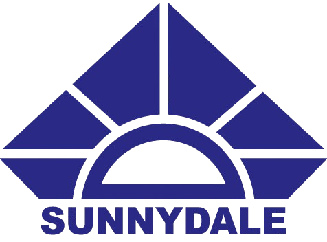

I want language technologies to be
for the people who use them, in every language they speak.
(Go ahead, unmask it. My thesis was about what models put in that blank.)
I am a Lecturer in Computer Science and Engineering at BRAC University, where I also completed my B.Sc. in Computer Science and Engineering with university's Highest Distinction (GPA: 4.0/4.0). My research sits at the intersection of natural language processing (NLP) and fairness: I study how language models absorb, express, and transfer bias, and how we can measure and mitigate it.
My undergraduate thesis, supervised by Dr. Farig Sadeque, introduced MALoR, a masked-token metric for quantifying gender bias in encoder models, and showed that counterfactual data augmentation can reduce measured bias by up to 95%.
I am looking for PhD opportunities for Spring 2027 / Fall 2027 in trustworthy and fair NLP, human centered NLP, privacy and security in LLMs, and multilingual, low-resource language technology. If our interests overlap, I would be glad to hear from you.
News
- Two papers submitted to ARR (targeting EMNLP 2026): one on gender bias transfer in LLM-assisted student writing, one on benchmarking Bengali dialectal bias.
- Our paper on RAG techniques for Bengali standard-to-dialect translation was published at the BLP Workshop, IJCNLP–AACL 2025.
- My undergraduate thesis work on gender bias in encoder models is now on arXiv (2511.00519).
Publications & Preprints
Contaminated Collaboration: Measuring Gender Bias Transfer in LLM-Assisted Student Writing2026
under review · ARR targeting EMNLP 2026
Conducted the first controlled study (N=153) on gender stereotype propagation in LLM-assisted career essay writing. Demonstrated bias transfer using a fine-tuned agency classifier and a novel Stereotype Congruence Rate (SCR) metric.
Benchmarking Bengali Dialectal Bias: A Multi-Stage Framework Integrating RAG-Based Translation and Human-Augmented RLAIF2026
under review · ARR targeting EMNLP 2026
Created a benchmark evaluating 19 LLMs on 4,000 gold-labeled questions across nine Bengali dialects using RAG-based translation. Proposed an RLAIF bias evaluation framework with Chain-of-Thought rubrics and introduced the Cultural Bias Score (CBS) metric for safety-critical assessment.
A Comparative Analysis of RAG Techniques for Bengali Standard-to-Dialect Machine Translation Using LLMs2025
published BLP Workshop @ IJCNLP–AACL 2025, ACL Anthology
Designed two RAG pipelines for standard-to-dialectal Bengali translation across six dialects using in-context learning. Improved translation accuracy by over 25% with sentence-pair RAG, enabling Llama-3.1-8B to outperform GPT-OSS-120B..
Exploring and Mitigating Gender Bias in Encoder-Based Transformer Models2025
preprint Undergraduate Thesis, BRAC University
Proposed MALoR, a metric for quantifying gender bias in encoder-based models. Built a gender-balanced pretraining dataset with over 19,000 counterfactual sentence pairs using CDA, reducing gender bias by up to 95%.
Identifying Framing Bias in Online Climate Change News Articles2024 – 2025
Research Project, BRAC University
Built a climate change news dataset using expert annotation and GPT-4 synthetic augmentation for multi-class framing classification. Fine-tuned Longformer, BigBird, BERT, and LLaMA 3.1, applying QLoRA for memory-efficient PEFT.
Work Experience
Lecturer, Dept. of CSE, BRAC University
Dhaka, Bangladesh
I teach CSE220 (Data Structures), CSE221 (Algorithms), and CSE440 (Natural Language Processing) to 300+ undergraduate students each semester.
Other services
- Thesis Supervisor: Co-supervised and supervised 50+ students working on NLP undergraduate theses
- Pre-Thesis I Panel Judge: Reviewed and provided feedback on initial thesis drafts of undergraduate teams
- Final Thesis Defense Panel Judge: Reviewed and evaluated completed undergraduate research works
- Course Advisor: Advised students on and approved undergraduate courses, and created course routines
Research Assistant, Dept. of CSE, BRAC University
Dhaka, Bangladesh
Full-time RA under Dr. Muhammad Nur Yanhaona on news framing classification with ML and NLP.
Student Tutor (ST), Dept. of CSE, BRAC University
Dhaka, Bangladesh
Graded, lectured occasionally, and held up to 15 hours/week of student consultations.
Education
B.Sc. in Computer Science and Engineering, BRAC University
Dhaka, Bangladesh
Grade: GPA 4.0/4.0 (Highest Distinction)
Thesis: Exploring and Mitigating Gender Bias in Transformer-based Language Models
Relevant Coursework: NLP, Neural Networks, Artificial Intelligence, Linear Algebra, Calculus

Cambridge O & A Levels, Sunnydale
Dhaka, Bangladesh
Award: Outstanding Cambridge Learner Award for World's Highest Mark (100%) in AS Level Mathematics
Selected Projects
BiasGuard: Explainable sexism detection in online texts
Developed deep learning models (CNN, BiLSTM, and GRU) for sexist content detection in online text, with data preprocessing, embedding generation, and exploratory analysis.
NLPSentiment Analysis on IMDB Movie Reviews
Built sentiment analysis models using Naive Bayes, Logistic Regression, and LSTM to classify movie reviews, comparing traditional machine learning and deep learning approaches.
Computer VisionImage Classification with CNN Variants on CIFAR-10
Designed and trained CNN models with varying architectures, comparing activation functions, kernel sizes, filters, and strides to evaluate their impact on image classification performance.
Machine LearningWine Quality Prediction using Machine Learning
Built wine quality prediction models using Random Forest, Logistic Regression, Naive Bayes, and SVM, with feature engineering, scaling, and feature importance analysis.
IoT · ArduinoDisasterGuard: Home Security System using Arduino and Sensors
Developed an Arduino-based home security system using multiple sensors to detect earthquakes, gas leaks, smoke, and intrusions, with real-time SMS and buzzer alerts.
Web PlatformPet Care: Veterinary and Adoption Services Platform
Developed a pet care management system with modules for feeding, medication, grooming, cleaning, veterinary services, and adoption using HTML, CSS, JavaScript, PHP, and MySQL.
More on GitHub →
Talks
Talking to Machines: The Power of Natural Language Processing
IEEE Robotics and Automation Society, BRAC University
Introduced NLP from how machines understand language to recent technologies including LLMs to 140+ undergraduate students [slides]
Awards & Achievements
- BRAC University Highest Distinction: Awarded Highest Distinction for achieving a CGPA of 3.80 or higher. Graduated with perfect 4.0/4.0 GPA.2023
- BRAC University 100% Performance-Based Scholarship: Received 100% scholarship for maintaining CGPA of 4.0/4.0 throughout undergraduate studies.2020 – 2023
- BRAC University Vice Chancellor’s List: Recognized on Vice Chancellor's List 10 times during Bachelor's for achieving a GPA of 3.90-4.00 in multiple semesters.2020 – 2023
- Outstanding Cambridge Learner Award: Awarded World Highest Marks (100%) in AS Level Mathematics.2019
- The Daily Star Award for A Level Outstanding Results: Recognized for achieving a minimum of 3 A's in A Level examinations.2019